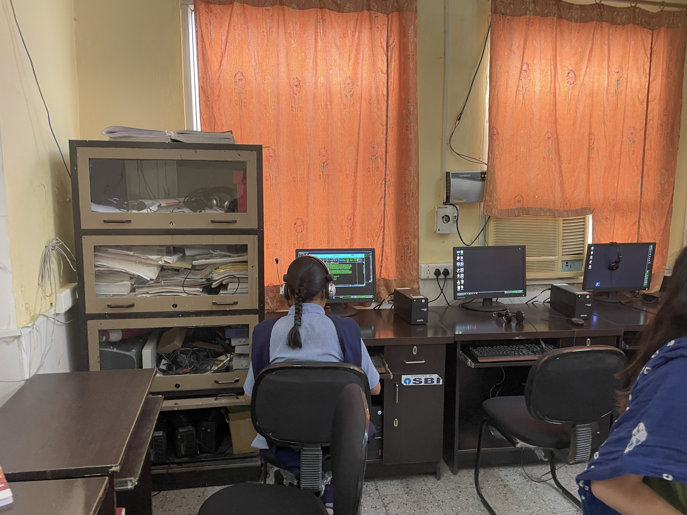
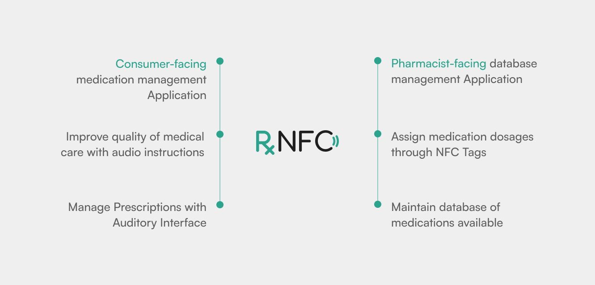
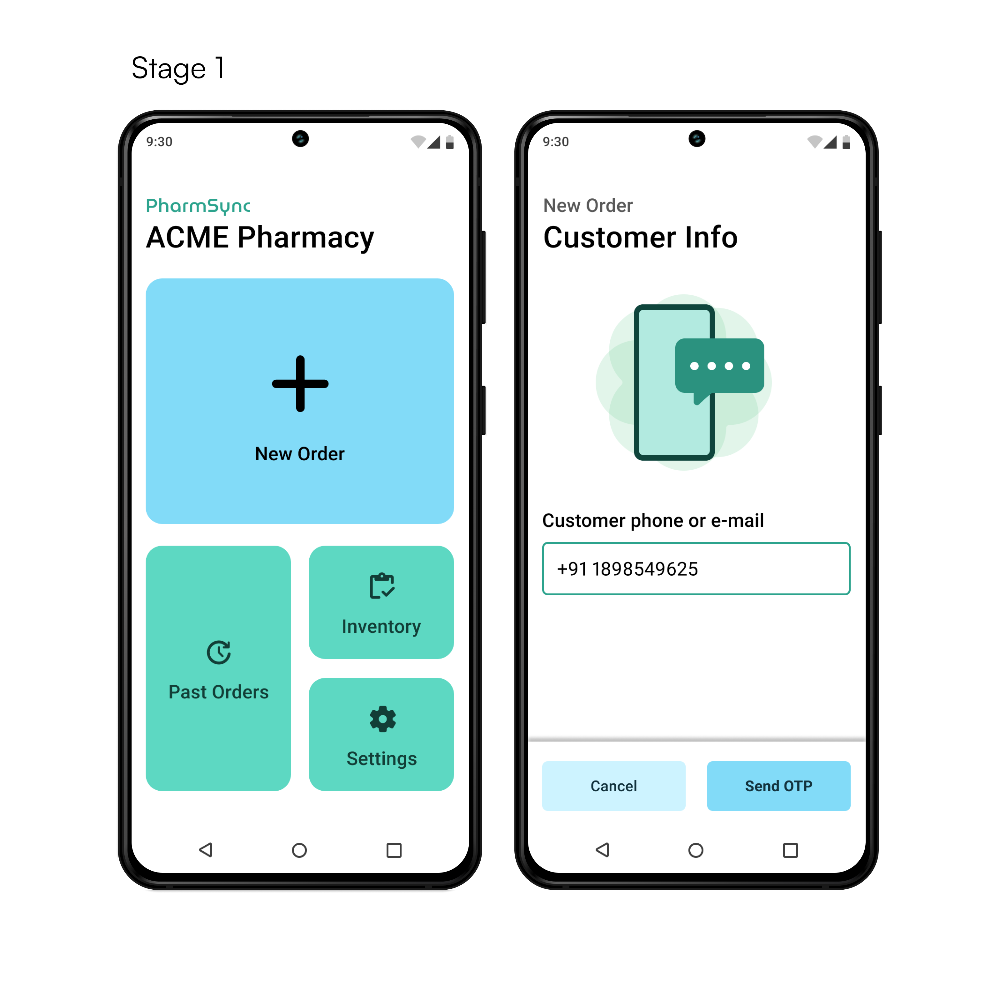
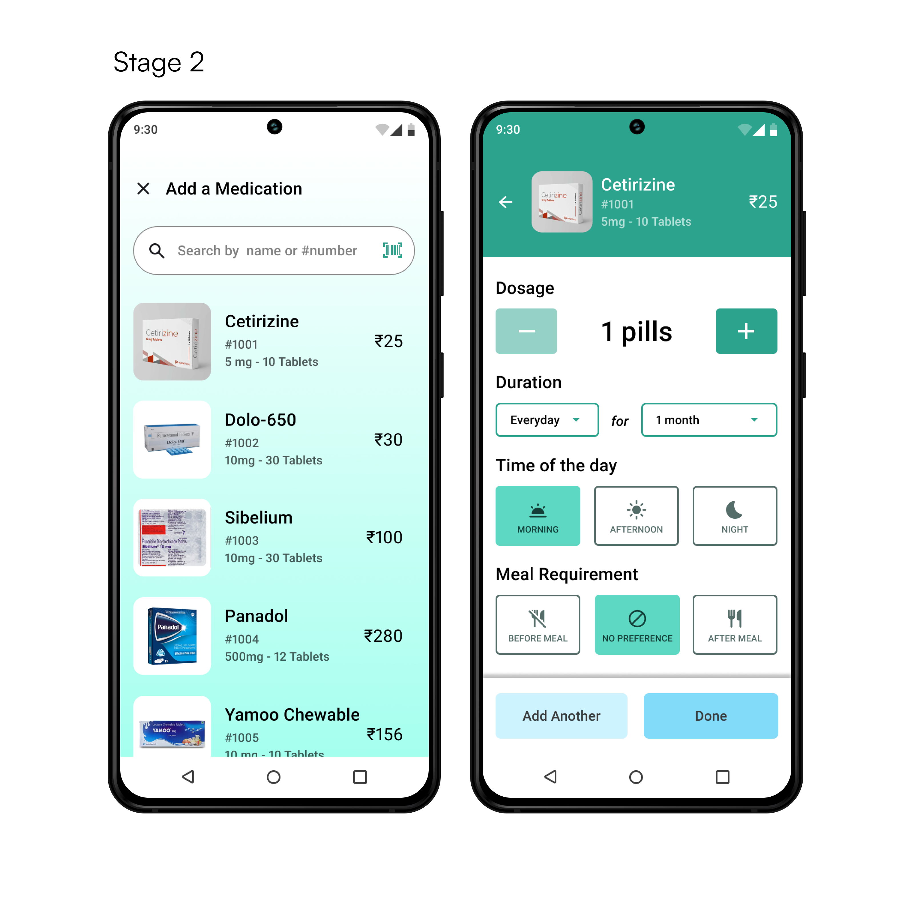
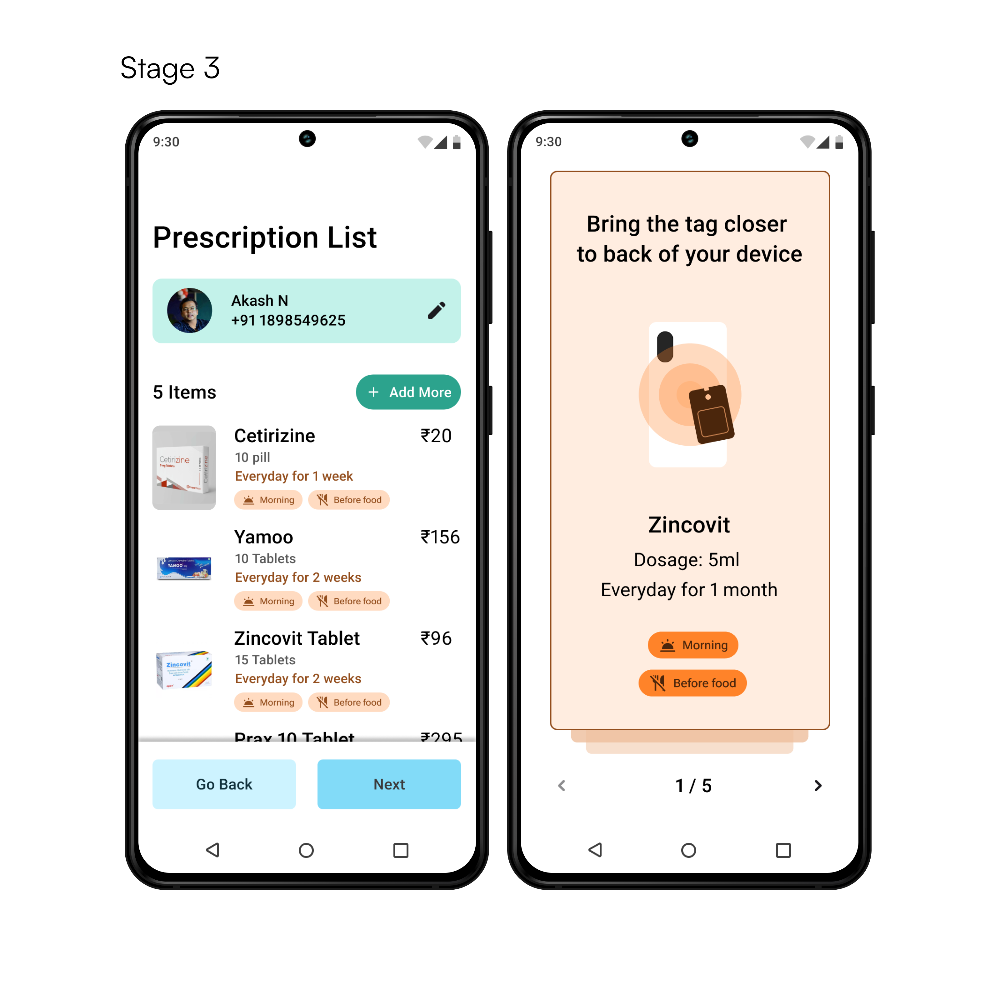

In short,
Rx-NFC is a service intended to improve quality of medication management for visually-impaired individuals. In prinicple, the service uses NFCs to tag and sort medicines based on ingestion time & frequency that serves as a way to inform during the first few days and to confirm after being accustomed to a type of arrangement.
Collaborators - Arjun, Aditi, Thirak, Nikhil, Jasmine
Primary Role - Service Designer
Context
During one of our academic courses at university, we ran through multiple design activities aimed at imbibing making accessibility a guiding principle in our workflows. Through the end of the course, we visited a school for visually-impaired people.
The source of effort involved in making learning, play and healthcare accessible was rooted in attention, care and representation.

Computer Lab, Rajasthan Netraheen Kalyan Sangh
Observed Problems
Physical activities
Handling Medication - Receiving prescriptions, Possibilities of
misinterpretations, handing it over to pharmacist, Accidental spills
Cognitive activities
Dosage Comprehension - Understanding dosage instructions, including frequency and timing, can be challenging due to cognitive load.
Tracking and Reminders - Keeping track of which medications have been taken, which are due, and setting reminders can be overwhelming.
Behavioural activities
Medical Adherence - identifying ,organizing,
remembering medications.
Dependency on others - Labels , organizing dosage, fear of errors
Tactile differences amongst pills
Tactile cues from medicine packaging may not provide significant differences for recall purposes, potentially leading to misinterpretation and incorrect consumption. This can make recalling dosage instructions more difficult, affecting the ability to build concrete associations, properly register, and remember a medicine regimen. As a result, it may also hinder the segregation and organization of medicines for accurate and safe consumption.
Considerations & Strategy
We attempted to design an intervention that aids in self-management of medications for visually-impaired individuals between 15 and 50 years of age who aspire and are fond of being independent.
We prioritised our design goals to serve to cost-efficiency, ease of implementation and complementing independence.
Rx-NFC
The proposition consists of three different artifacts. A user-facing application, a pharmacist-facing application and NFC tags.

The pharmacists log verbal instructions for the medications in the NFC tags guided by the application.



Ecosystem Test V1.